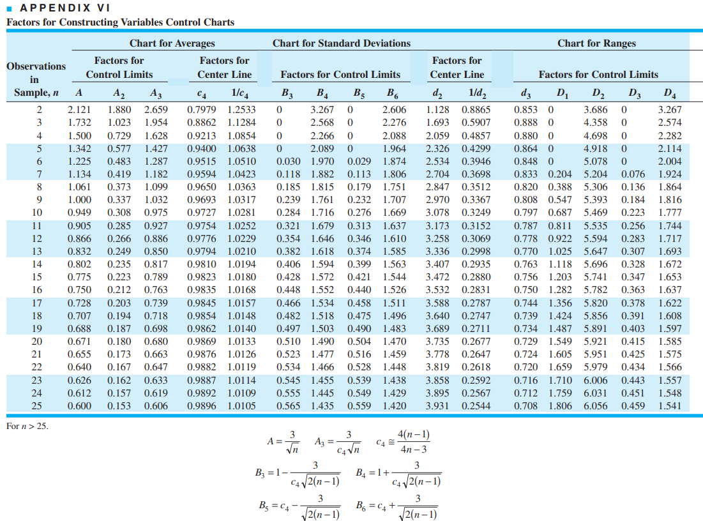

Código
library(ggplot2)
library(gridExtra)
library(dplyr)
library(reticulate)
use_python("C:/Users/user/anaconda3/python.exe", required = TRUE)library(ggplot2)
library(gridExtra)
library(dplyr)
library(reticulate)
use_python("C:/Users/user/anaconda3/python.exe", required = TRUE)# Tratamentos de Dados
import numpy as np
import pandas as pd
# Funções Estatísticas
from scipy import stats
# Visualizações Gráficas
import matplotlib.pyplot as plt
import seaborn as snsA inferência estatística permite tirar conclusões sobre um processo a partir de uma amostra.
Um estimador é uma função da amostra usada para estimar um parâmetro.
Boas propriedades desejáveis:
Não-viesado: Valor esperado (médio) do estimador é converge (igual) ao parâmetro verdadeiro, isto é, \[E [\hat{\theta}] = \theta.\]
Consistência: A medida que \(n\) (tamanho amostral) tende ao infinito, o estimador converge, em probabilidade, ao verdadeiro valor do parâmetro. Isto é, seja \(X_{1}, X_{2}, \ldots, X_{n}\) uma amostra aleatória de uma variável aleatória \(X\) com média \(\theta\) e variância \(\sigma^{2}\).
Um estimador para \(\theta\), é dito consistente se: \[\lim_{n \to \infty} P(|\hat{\theta} - \theta| > \epsilon) = 0, \forall \epsilon > 0.\]
Em geral, a desigualdade de Chebyshev pode ser usada para verificar essa propriedade: \[P(|\hat{\theta} - \theta| > \epsilon) \leq \dfrac{\sigma^{2}}{n \epsilon^{2}}.\]
Portanto, à medida que \(n\) cresce, a probabilidade de o estimador estar distante do verdadeiro parâmetro \(\theta\) tende a zero, garantindo sua consistência.
Um estimador \(\hat{\theta}\) é eficiente se sua variância atinge o limite inferior dado por: \[Var[\hat{\theta}] \geq \dfrac{1}{I(\theta)},\]
em que \(I(\theta)\) é a Informação de Fisher expressa por: \[I(\theta) = - E \left[ \dfrac{\partial^{2} L (\theta)}{\partial \theta^{2}} \right].\]
A dispersão do processo pode ser estimada usando:
O nível do processo geralmente se refere à média do processo.
Os gráficos de controle são ferramentas gráficas usadas para monitorar processos ao longo do tempo.
Proposta geral: \[\begin{cases} LIC & = \mu_{w} - 3 \times \sigma_{w} \\ LC & = \mu_{w} \\ LSC & = \mu_{w} + 3 \times \sigma_{w} \end{cases}\]
Temos que: \[P (LIC \leq X \leq \mu_{w}) = \alpha / 2\] e \[P (\mu_{w} \leq X \leq LSC) = \alpha / 2.\]
Se \(X_{i} \sim \text{Normal}(\mu, \sigma^{2})\), então \[P \left( \dfrac{\mu_{w} - 3 \sigma}{\sqrt{n}} \leq \bar{X}_{i} \leq \dfrac{\mu_{w} + 3 \sigma}{\sqrt{n}} \right) = 0,9973\] que é equivalente a \[P \left(-3 \leq \dfrac{\sqrt{n} (\bar{X}_{i} - \mu)}{\sigma} \leq 3 \right) = 0,9973\].
Principais gráficos:

Nota: Iremos utilizar \(n\) como o números de características mensuradas (colunas) no processo.
Quando utilizar:
Expressões para:
Quando utilizar:
Expressões para:
Menos comum;
Baseado na distribuição Qui-Quadrado (\(\chi^{2}\)).
Expressões:
Útil quando se deseja monitorar diretamente a variância do processo.